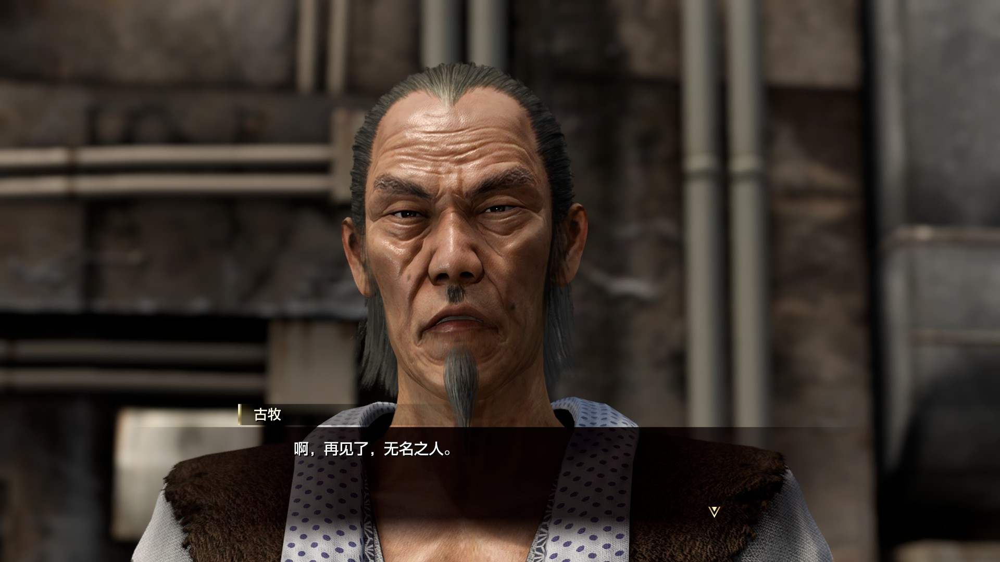

锐评如龙8
主线
打完如龙7趁热打铁在元旦时候打完了如龙8。 继7代的结局后，春日一行人在异人町开启了新生活。 开局很快就是春日追小纱，难波和足立两个单身狗给春日疯狂出主意 像极了你追女孩时候给你出谋划策的军师兄弟 总之就是一个敢问一个敢答。
当然了，如龙系列必然不能让你舒服的过小日子，然后就是春日一行人油管皮套up搞，该被辞退被辞退，于是红绿蓝三老只再次出山。
到是既有现代赛博生活的影子又保留了春日勇者的中二。 春日拍找妈妈的视频发油管的桥段设计的也很不错。 剧情也不乏跌宕起伏和反转，虽然有些地方略显牵强，而且没有7代里面荒川老爹神秘跳反、春日一行从谷底如何爬起那般勾人心弦， 但也算是能吸引人玩下去看看故事的下一步到底是什么样的。 至于结尾对三田村的（写姓是不是更不容易被剧透嘿嘿）圣母嘛，尤其是背着他去自首然后一路被打的样子，倒是有那么一种非暴力不合作的反抗意味在哪。 （虽然还是感觉很窝囊） 很多人都把本作的剧情喷做一坨屎，所以今年的最佳剧情游戏提名到如龙8的时候我还惊诧了一番。 不过玩完了以后觉得没那么离谱了，一是剧情虽然结尾仓促，但也没有传闻中的那么屎，过程中可圈可点之处也有。再者…今年好像确实没啥剧情牛逼的大作了。
春日总是从谷底重新爬起，虽然我知道这是游戏需要，总不能一上来就给你满级加全套装备。强如阿泰尔也得从头学起。
也许桐生是极道的天心之皓月，而春日只是腐草之萤光。可总能接受突如其来的恶意，然后转身用自己的勇者之心去接纳一切的春日当然也有自己独自的魅力。
最近工作上并不顺利，总是天天加班到凌晨。一周前就想写的东西今天才红着双眼开始敲键盘。 总是觉得就要干不下去了，可是想想春日总觉得还能坚持下去再拼一把，也许熬过这个节点就能守得云开见月明。 还要撑起家里的吃喝拉撒，我得像勇者一样战斗下去。
战斗系统
本作的战斗系统可以说是大幅度优于如龙7了。各种范围技能都有了明显的作用范围的标识，不再需要自己脑补了。 回合中可以小幅度的调整位置来调整近战加成和背后攻击加成。 可以说是明显修正了7代中存在的问题。 难度曲线也明显没有7代那么陡峭，大部分地方都不太用刻意刷级，即使需要刷级的地方也能在迷宫里很快的刷够。
支线任务
夏威夷
本作的支线任务和7代联系非常紧密，比如随叫随到的大姐姐千岁巴·斯塔·霍姆斯是前作随叫随到盖瑞·巴斯塔·霍姆斯的女儿。 冲田博士的扫地丸也有升级版并来到了夏威夷。 一同来到夏威夷的小龙虾南希、来度假的权田原组长。 组长的这个支线还是很不错的，既有弥留之际爱人的留恋，又有龙组的恶趣味。 完全新的支线我比较喜欢呼风萨满这个任务
交友软件
啧啧，以前早有耳闻如龙系列会请老师来，不过遗憾的是如龙8里还是很素的 虽然可能还是让人不好意思在公开场合玩。 除了三位真实女孩外都是很诡异的见光死。
江湖宝贝大师
前作的冲田博士也来了夏威夷。不过这次不再仅仅是收集图鉴了，而是真的像神奇宝贝一样抓宝可梦和对战了。
不过还是比较简单的，玩一定程度会有点乏味。

太鼓岛
动森启动！总之玩过动森的玩家估计是无缝上手，抓虫子砍树挖石头。就是钓鱼变成叉鱼了（我在海边待半天不知道怎么抛竿然后发现是钓鱼） 不过有时候想赶紧跳过一天来刷商店的家具却不能快速跳过一天，就只能挂机等。 背包和仓库也不是很方便。 感觉在舒适性上还是有很多可优化的地方。 不过总体感觉夏威夷的支线主要还是7代的续集。夏威夷本土的新支线并不多。
日本
想必从如龙系列一路玩过来的老玩家在玩桐生的死前日记，找回各种回忆的时候都会百感交集吧。 我没有玩过7之前的作品，不过到是云过123的剧情，即使如此也有蛮多触动的。（不过惊讶居然连遥都有孩子了？哦对，桐生已经是老爷爷了，就像我也是30岁的社畜而不是在校的学生了） 
DLC
总之就是千万别买，太大怨种了，二周目还能单独卖100多。感觉不太值。 不愧是特别差评 后日谈到是在dlc中🤔还算有点意思，比如几位大哥钓上来小黄书看了一天没钓上鱼，被胜熙惩戒。
题外话
这个朝仓竟然现实中真的有！好像还是本色出现。 不知道念zhao还是chao仓啊。。